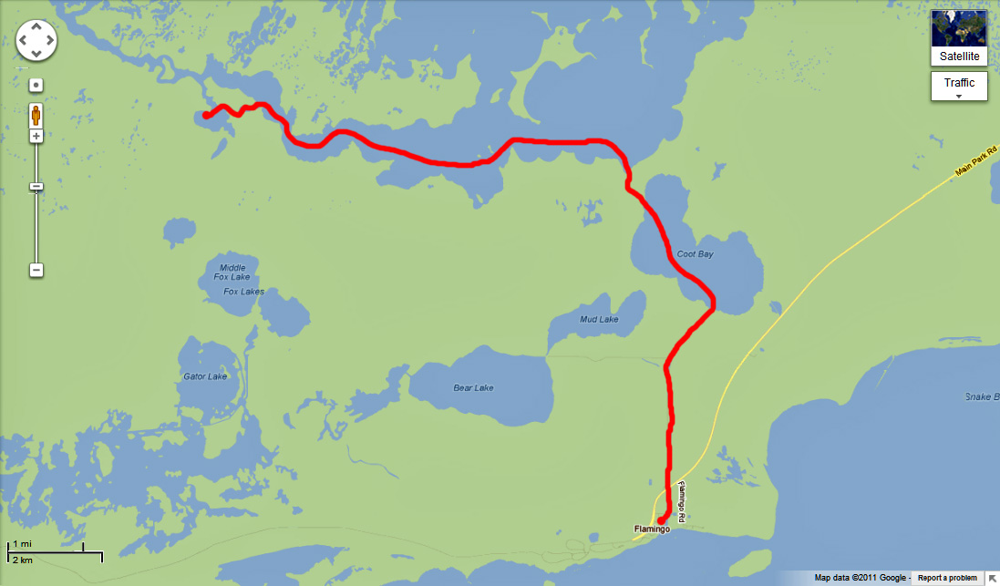

|
EVERGLADES
NATIONAL PARK
DECEMBER, 2O11
BACK TO FULL PHOTOSET
FLAMINGO CAMPGROUND (FIRST & LAST NIGHTS)
FLAMINGO MARINA
FLAMINGO MARINA - LOADING THE BOAT
ROUTE FROM FLAMINGO
MARINA TO GULF OF MEXICO
FLAMINGO TO EAST CAPE
EAST CAPE (FIRST GULF COAST CAMP)
EAST CAPE CAMP
FROM
EAST CAPE PAST MIDDLE CAPE TO NORTHWEST CAPE (SECOND GULF COAST CAMP)
NORTHWEST POINT CAMP

NORTHWEST POINT CAMPSITE
ROUTE FROM NORTHWEST CAPE TO OYSTER BAY
OUT OF LITTLE SHARK
RIVER ACROSS OYSTER BAY TO OYSTER BAY CHICKEE
OYSTER BAY CHICKEE
OYSTER CHICKEE BOAT LOAD
ROUTE FROM OYSTER BAY CHICKEE TO SOUTH JOE RIVER CHICKEE
ARRIVAL AT SOUTH JOE RIVER CHICKEE
ROBERT ON SOUTH JOE RIVER CHICKEE

ROUTE FROM S. JOE RIVER ACROSS WHITEWATER BAY THROUGH TARPON CREEK
ACROSS COOT BAY DOWN BUTTONWOOD CANAL TO FLAMINGO MARINA
BACK
TO FULL PHOTOSET
|